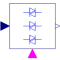

SoftStartControl |

|
Information
This information is part of the Modelica Standard Library maintained by the Modelica Association.
This block models the functionality of a soft starter controller, controlling the output vRef in the range [0,1] with respect to nominal voltage.
Boolean input start = true causes the output vRef to be risen according to a ramp: vRef = vStart + (1 - vStart)*(time - t0)/tRampUp.
In case the current exceeds the specified maximum current iMax during the starting ramp, the ramp is stopped.
When the current falls below the lower threshold of current control iMin < iMax, the ramp is continued.
Note: It is recommended to filter the measured current, e.g. using Modelica.Blocks.Continuous.Filter
Boolean input start = false causes the output vRef to be lowered according to a ramp: vRef = -(time - t0)/tRampDown.
Parameters (6)
| tRampUp |
Value: Type: Time (s) Description: Start ramp duration |
|---|---|
| vStart |
Value: 0 Type: Real Description: Start voltage / nominal voltage |
| iMax |
Value: Type: Real Description: Maximum current / nominal current |
| iMin |
Value: 0.9 * iMax Type: Real Description: Lower threshold of current control |
| INominal |
Value: Type: Current (A) Description: Nominal current |
| tRampDown |
Value: Type: Time (s) Description: Stop ramp duration |
Connectors (3)
| iRMS |
Type: RealInput Description: Measured RMS current |
|
|---|---|---|
| vRef |
Type: RealOutput Description: Reference voltage |
|
| start |
Type: BooleanInput |
Used in Examples (1)
|
Modelica.Electrical.PowerConverters.Examples.ACAC Soft start of an induction machine |